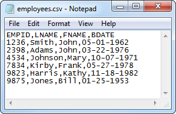

CSV import/export macro
An accounting firm needed a fast and automated way to read and write to CSV files following a standard they have developed. It was challenging at first, as I didn't have experience doing anything like this.
By looking at the documentation I was able to find a way to make it happen. It was fast and less error prone than what was being done so far. In the end the customer was happy and this routines helped them to save time